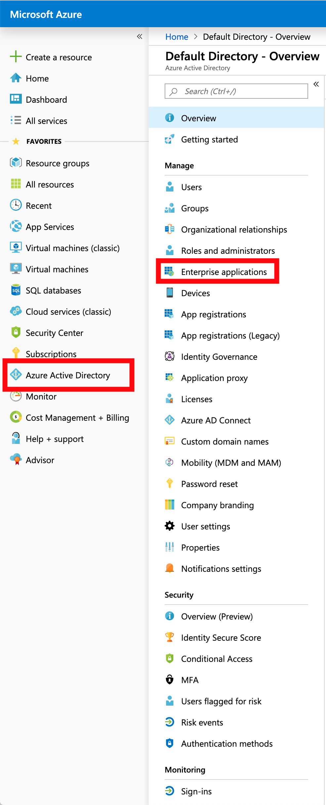
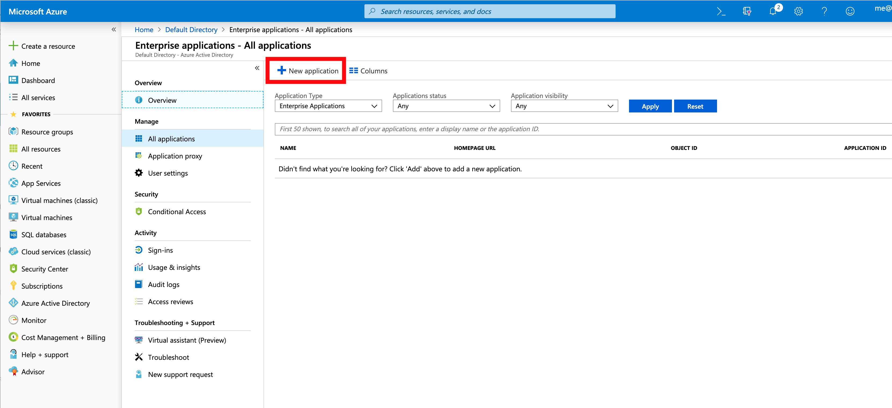
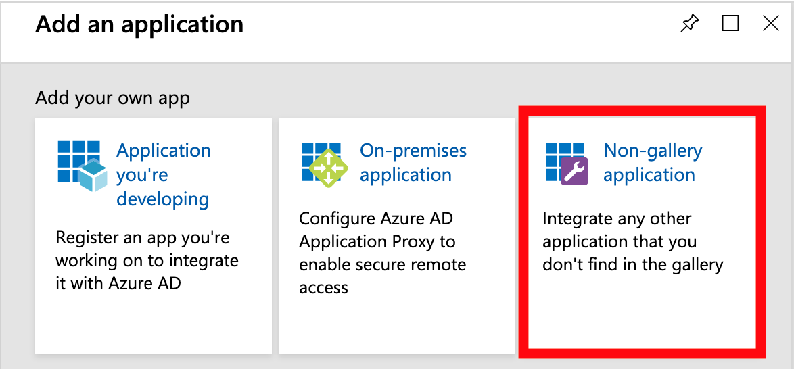
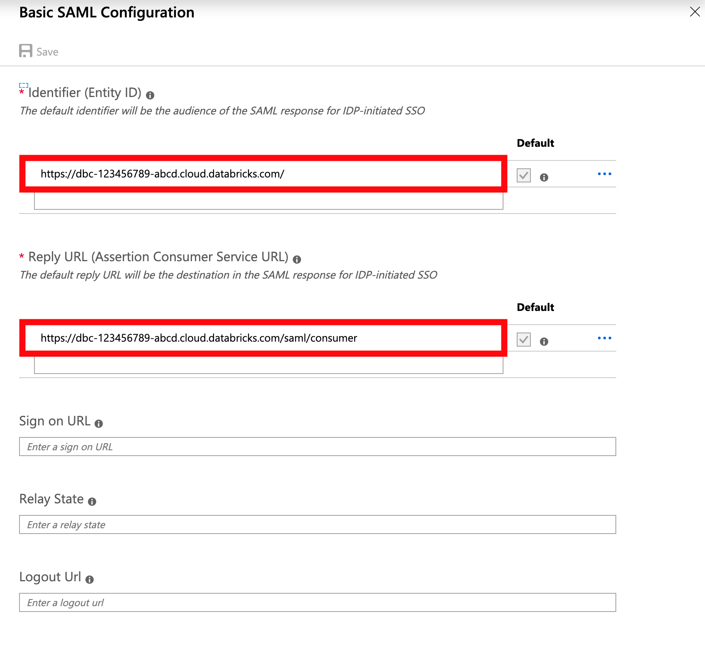
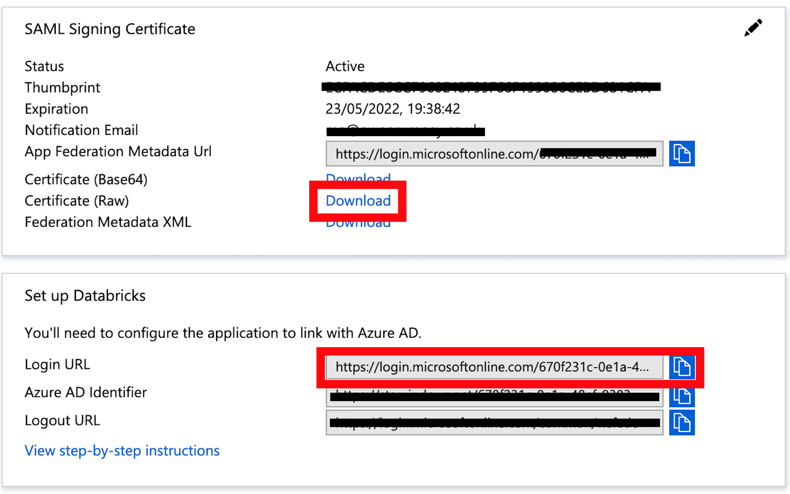
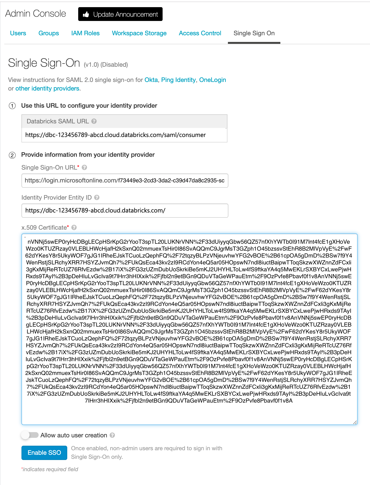
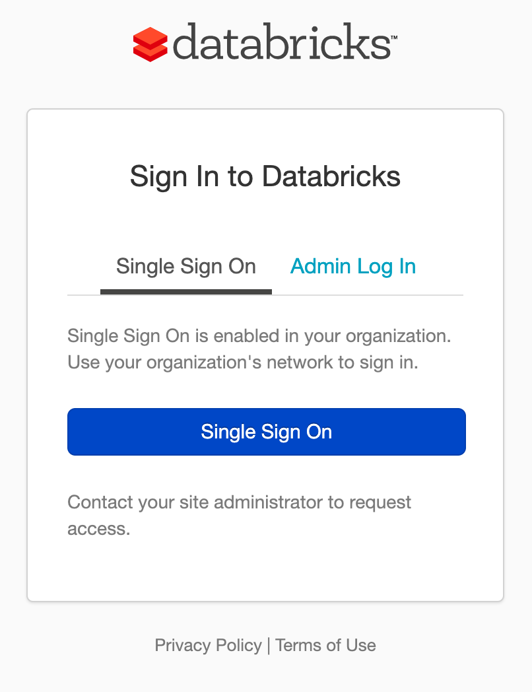

Overview
At my current workplace we are using Databricks with much success. Having recently activated the Security Operations Package I was keen to implement the Single SignOn (SSO) functionality.
The documentation provided by Databricks doesn’t seem to cover integrating with Azure Active Directory as a SAML 2.0 Identity Provider and it took some effort to work out how to do it.
Simple Steps
-
Log into Azure Portal and from the menu on the left, select
Azure Active DirectorythenEnterprise applicationsfrom the secondary menu.  -
Select
New Applicationto create a new Enterprise application 
3) Databricks isn’t one of the Gallery Applications at the time of writing, so select Non-Gallery Application from the available list.

-
This is where the Databricks instructions is unclear, you need to use your Databricks URL as the
Identity Provider Entity ID.  -
When you’ve completed and saved the basic settings, you’ll be able to download the x.509 certificate and have access to the Login URL to use in the Databricks Admin Console. Download the cert and open with a text editor to extract the certificate content 
-
You can now take these details over to the Databricks admin console to configure SSO. Enter the details into the Single Sign On tab in the
Admin Consolepage. YourIdentity Provider Entity IDis the root of your Databricks cloud URL.

- You can now log out, then log in using Single SignOn through Azure which should get you straight back in. 
A Note on Allow User Creation
If you enable Allow auto user creation, when a user logs in, it will create the user for them automatically. This is fine if you’ve configured Azure Active Directory to specify users who have a Role to use the Enterprise Application. For our use case, I’ve gone with this option disabled and enabled open access at the Active Directory end. This means that unknown (from a Databricks perspective) but otherwise authenticated users don’t have access to the environment